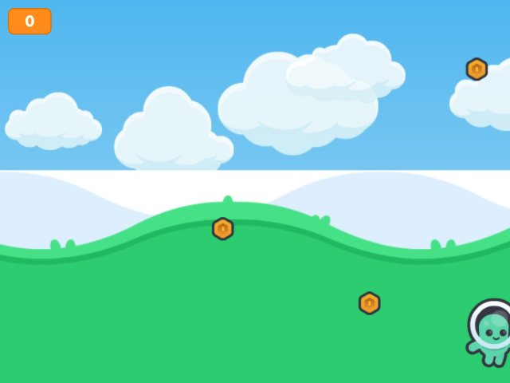
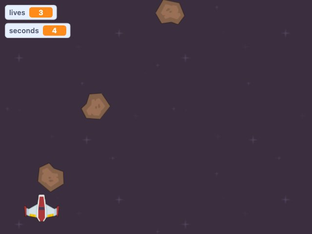
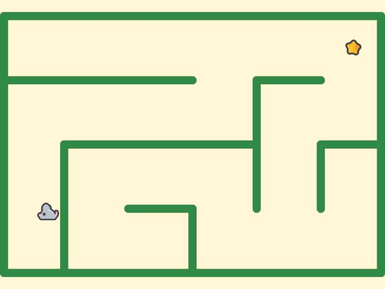
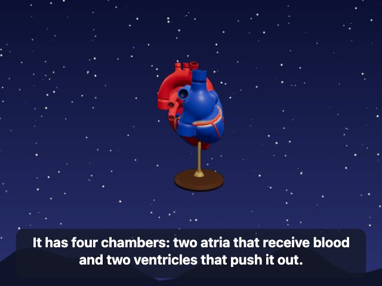
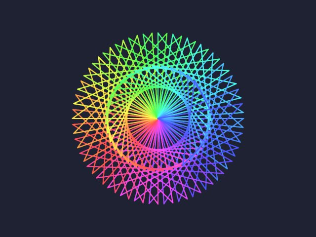

🎭 Make games, stories and animations
Edusim Stages is a flat stage, sprites, backdrops and blocks, laid out the way anyone who has used Scratch expects. It works in the browser, with nothing to install and no account.
Getting there: open Edusim Stages. Your project saves itself in the browser as you work, and File → Save to your computer keeps a copy you can send to someone. The address is edusim3dweb.com/stages/.
What makes it Edusim
- Edusim's 3D models are sprites. In Choose a Sprite → Edusim Models, any model from the Model Database is photographed from twelve sides, and the twelve pictures become its costumes, so next costume turns it round.
- Edusim's worlds are backdrops. Set a story on the Moon, in Ancient Egypt or on Dinosaur Island.
- Every project can be a video. File → Export a video makes an MP4, sound included, that plays on any phone or in a slideshow.
- Every project can become a 3D world. 🌍 3D (or File → Convert to 3D World) stands the project up in Edusim as a stage set, or lays it down as a giant board, and it still runs there: click it and choose ▶ Play. A sprite from the Model Database comes back as the real 3D model, and ✎ Edit in Stages brings the project back here to change.
- Every script can be text. The Text switch above the scripts shows them as lines of text, indented like Python, and turns edited text back into blocks.
The block colours
Motion Looks Sound Events Control Sensing Operators Variables Pen
The blocks and their names follow Scratch's, so a Scratch worksheet works here: the stage runs from x −240 to 240 and y −180 to 180, direction 90 is right, and a forever loop runs its whole inside once a frame, 30 times a second.
Projects to play and remix
Each one opens in Edusim Stages with every script there to read and change.

Game Catch the Coins Arrow keys to catch falling coins for 30 seconds. Clones, a score and a timer. Game
Jump Up
A platform game: run, jump and reach the flag. Gravity is one variable.
Game
Jump Up
A platform game: run, jump and reach the flag. Gravity is one variable.

Game Space Dodge Dodge the meteors as they fall faster and faster. Three lives.
Game Mouse Maze Guide the mouse to the star without walking through the walls. Game
Paddle Ball
Keep the ball in play with the paddle. Mouse or arrow keys.
Game
Paddle Ball
Keep the ball in play with the paddle. Mouse or arrow keys.
 Quiz
Times Tables Quiz
Maya asks five questions and keeps score. Ask, answer, if and else.
Quiz
Times Tables Quiz
Maya asks five questions and keeps score. Ask, answer, if and else.
 Story
A Trip to the Moon
Riley and Robo fly from the Park to the Moon, two of Edusim's own worlds.
Story
A Trip to the Moon
Riley and Robo fly from the Park to the Moon, two of Edusim's own worlds.
 Animation
A Walk Through Town
A walk cycle from eight costumes, and a bee that flies a sine wave.
Animation
A Walk Through Town
A walk cycle from eight costumes, and a bee that flies a sine wave.

Animation The Beating Heart The Model Database's heart as a sprite: it turns, it beats, and the facts come with it. Animation
Robot Dance Party
Costumes, a colour effect and a drum beat. The first tutorial, finished.
Animation
Robot Dance Party
Costumes, a colour effect and a drum beat. The first tutorial, finished.

Art Star Patterns A star drawn 36 times with the pen, turning a little and changing colour each time.Tutorials
1. Robot Dance Party Beginner
Make Robo dance to a drum beat. Your first script. In the app: 📘 Tutorials → this card, which opens a project with the sprites ready and the scripts left for you.
- Meet Robo. Robo is on the stage, ready to dance. Press the green flag ⚑ above the stage. Nothing happens yet, because Robo has no scripts. Scripts are made by dragging blocks from the palette on the left into the big script area.
- Start with the flag. Click Events in the list of colours. Drag when ⚑ clicked into the script area. Every script that should run when the green flag is pressed starts with this block.
- Keep going. From Control, drag forever so it snaps under when ⚑ clicked. A grey line shows where it will join.
- Dance moves. From Looks, drag next costume into the mouth of forever. Then put wait 1 seconds under it, and change the 1 to 0.25. Press the green flag. Robo dances!
- Disco lights. Make a second script: another when ⚑ clicked and forever, with change color effect by 25 inside. Change 25 to 5. Two scripts can run at the same time. Press the flag again.
- Music. Click the Stage on the right, under the sprites. The stage can have scripts too. Give it when ⚑ clicked, forever, and play sound Drum Beat until done inside.
- A spin. Click Robo again. Add when space key pressed with repeat 10 and turn ↻ 36 degrees inside. Run it and press the space bar. 10 turns of 36 degrees is a whole turn, because 10 × 36 = 360.
- Keep it. Use File, then Save to your computer, to keep your project. You can open it again with File, then Load from your computer. The finished version is in Projects as Robot Dance Party, if you want to compare.
2. Tell a Story Beginner
Two characters, two places, captions and conversation. In the app: 📘 Tutorials → this card, which opens a project with the sprites ready and the scripts left for you.
- The cast. Riley and Robo are on the stage, and the stage has two backdrops: the Park and the Moon, both from Edusim's own 3D worlds. You will tell their story.
- Set the scene. Click the Stage. Give it when ⚑ clicked, then switch backdrop to Park, then show caption with your first line, like "One day in the park..." Add wait 3 seconds and hide caption.
- Riley speaks. Click Riley. Use when I receive and make a New message called "chat". Under it, add say Hello! for 2 seconds.
- Robo answers. Click Robo. Add when I receive chat, then wait 2 seconds so Robo waits for Riley to finish, then say something back.
- Start the conversation. Back on the Stage, add broadcast chat and wait to the end of its script. "and wait" means the stage waits until everyone has finished talking.
- Off to the Moon. After that, add switch backdrop to Moon and a new caption. On Riley and Robo, use when backdrop switches to Moon to say something about being on the Moon.
- Make a video. Press the green flag to watch your story. When you like it, use File, then Export a video, to make an MP4 you can play anywhere. The finished version is in Projects as A Trip to the Moon.
3. Catch the Coins Intermediate
A game with arrow keys, falling clones, a score and a timer. In the app: 📘 Tutorials → this card, which opens a project with the sprites ready and the scripts left for you.
- The game. Coins fall from the sky and the Catcher catches them. You have the sprites and the score. The scripts are yours to build.
- Move with the arrows. Click the Catcher. Build: when ⚑ clicked, forever, and inside it if key right arrow pressed? then change x by 9. Add another if for the left arrow, with change x by -9. Try it.
- Face the way you walk. Inside each if, add point in direction 90 for right and point in direction -90 for left. The Catcher's rotation style is left-right, so it flips instead of turning upside down.
- Rain coins. Click the Coin. Build: when ⚑ clicked, hide, forever with create clone of myself and wait pick random 0.4 to 1.1 inside.
- Each clone falls. Add when I start as a clone, then go to x: pick random -220 to 220 y: 170, then show. Then repeat until y position < -165 with change y by -5 inside. After the loop, delete this clone.
- Catch it. Inside the repeat, add if touching Catcher? then change score by 1, start sound Coin and delete this clone.
- Reset the score. Click the Stage. Build when ⚑ clicked, set score to 0, reset timer, wait until timer > 30, broadcast game over.
- Game over. On the Catcher: when I receive game over, stop other scripts in sprite, then say join with the score. On the Coin: when I receive game over, stop other scripts in sprite, delete this clone. Play! A project can have 100 clones at once, which is why each one deletes itself.
4. Mouse Maze Intermediate
Walls you cannot walk through, and a timer for how long it took. In the app: 📘 Tutorials → this card, which opens a project with the sprites ready and the scripts left for you.
- The maze. The walls are one sprite, so "touching Walls?" is true whenever the mouse is touching any wall. The star is the goal.
- Step and step back. On the Mouse: when ⚑ clicked, go to x: -200 y: -120, then forever with if key right arrow pressed? then change x by 4. Inside that if, add if touching Walls? then change x by -4. If a step goes into a wall, step straight back.
- All four ways. Do the same for left (-4), up (change y by 4) and down (change y by -4). Each one steps back if it hits a wall.
- Win. Make a second script: when ⚑ clicked, reset timer, wait until touching Star?, stop other scripts in sprite, then say join "I did it in " round timer. Why not stop all? Stopping everything also clears every speech bubble, so the message would vanish at once.
- Make it yours. Click the Walls sprite, then Costumes, and paint your own maze. Keep the corridors wider than the mouse.
5. Jump Up Advanced
A platform game. Gravity is a variable that changes every frame. In the app: 📘 Tutorials → this card, which opens a project with the sprites ready and the scripts left for you.
- How falling works. Real gravity makes you fall faster and faster. In a game that is one variable, vy (speed up and down): take 1 off it every frame, then move by it. The Hero already has a variable called vy, for this sprite only.
- Fall. On the Hero: when ⚑ clicked, go to x: -200 y: -100, set vy to 0, forever with change vy by -1 and change y by vy inside. Run it: the Hero falls straight through everything.
- Land. Inside forever, add if and with touching Platforms? and vy < 1. Inside: change y by 0 - vy (undo the last move) and set vy to 0. Only falling counts, which is why it checks vy < 1: you can jump up through a platform from below.
- Jump. Inside the landing if, add if key up arrow pressed? then set vy to 15. You can only jump while you are standing on something.
- Run. Add if key right arrow pressed? with point in direction 90 and change x by 5, and the same for left.
- Reach the flag. Second script: when ⚑ clicked, wait until touching Flag?, stop other scripts in sprite, say I made it!. Try changing 15 and -1: a bigger jump, or Moon gravity.
6. Spin an Edusim Model Beginner
Bring a 3D model from the Model Database onto the stage and make it turn. In the app: 📘 Tutorials → this card.
- Choose a model. Under the stage, press Choose a Sprite, then the Edusim Models tab. Pick any model: a heart, a rocket, a volcano, a violin. Edusim photographs it from twelve sides. Those twelve pictures become its costumes.
- Turn it. Give it when ⚑ clicked, forever, with next costume and wait 0.1 seconds inside. Each costume is the model seen from 30 degrees further round.
- Make it beat or bounce. Add a second script with forever: change size by 8, wait 0.15, change size by -8, wait 0.5.
- Tell people about it. Click the Stage and use show caption to add facts about your model. The Beating Heart in Projects is a finished example.
7. Walk into Your Project Beginner
Turn any project into a 3D world in Edusim, play it there, then bring changes back. In the app: 📘 Tutorials → this card.
- Pick a project. Use any project: one of yours, or one from Projects. Catch the Coins is a good first one. Your project stays exactly as it is. Converting makes a copy in 3D.
- Convert it. Press 🌍 3D beside the stop button (or File, then Convert to 3D World). Choose how the stage stands: a stage set stands up like a theatre, a board lies on the ground like a giant game board. Then choose how big, and where. A backdrop from an Edusim world, like the Moon, can take you to that whole world.
- Open it in Edusim. Press Open in Edusim. A new tab opens with your project standing in a world, right in front of you. Walk round it with the arrow keys. Look at it from the side, from behind, from far away.
- Play it in 3D. Click the stage and choose ▶ Play. The camera comes round to face it, and the arrow keys and the mouse go to your project, exactly as in Stages. Press Esc or Stop playing to walk again.
- Edusim models come back to life. A sprite you chose from Edusim Models is the real 3D model in the world. Its 12 costumes were 12 sides of it, so next costume turns the real model round.
- Change it and send it back. Click the stage and choose ✎ Edit in Stages. Your project opens here. Change anything, then press ↩ Back to 3D world at the top: the stage in your world updates straight away.
8. Draw with the Pen Beginner
Make a sprite draw shapes, then a pattern from a shape. In the app: 📘 Tutorials → this card, which opens a project with the sprites ready and the scripts left for you.
- A square. Click the Pen sprite. Build: when ⚑ clicked, erase all, pen down, repeat 4 with move 100 steps and turn ↻ 90 degrees inside.
- A star. Change repeat 4 to 5, and turn 90 to 144. Why 144? A star turns twice round in five points: 2 × 360 ÷ 5 = 144.
- A pattern. Put the whole repeat inside another repeat 36, and add turn ↻ 10 degrees after the star. 36 × 10 = 360.
- Colour. Inside the big repeat, add change pen color by 3. Try other numbers, other shapes, and set pen size.
Scripts as text
Here is the Coin from Catch the Coins in the Text view. Each line is a block, and the blocks inside a loop or an if are indented under it: